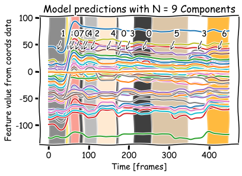
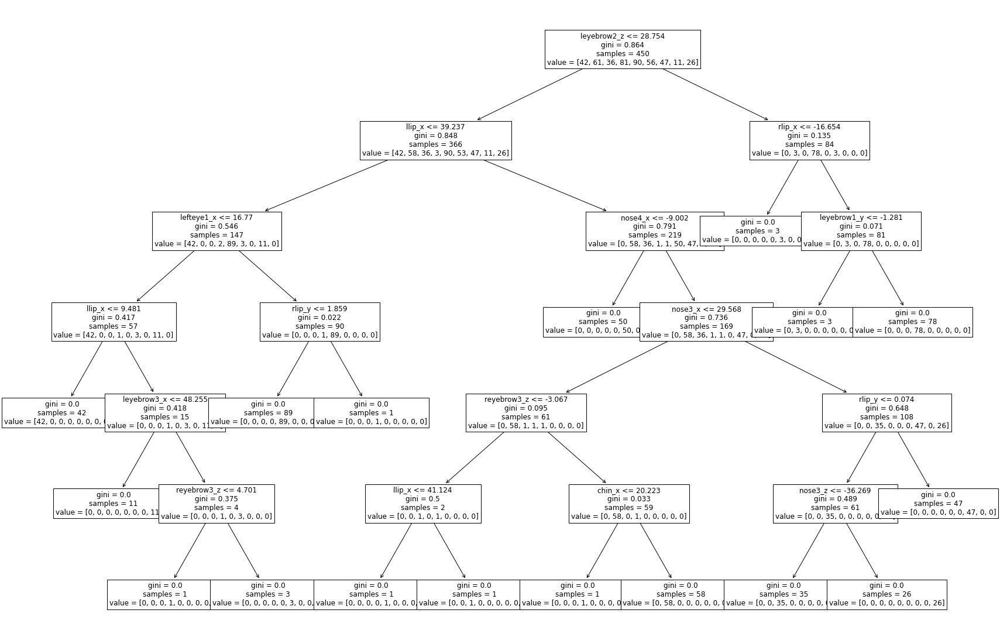
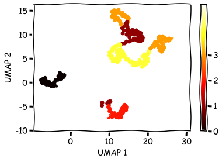

Machine Learning
Contents
Machine Learning¶
What libraries should I import?¶
pip install hmmlearn
pip install umap-learn
from hmmlearn import hmm
import umap
from sklearn.mixture import GaussianMixture
from sklearn import tree
from sklearn.tree import DecisionTreeClassifier
import pandas as pd
import numpy as np
import matplotlib.pyplot as plt
Recap¶
Dummy data for the following exercises is provided here.
file = '/Users/guillermo/Downloads/pose-3d.csv'
data = pd.read_csv(file, header=0)
coords = data.loc[:, ~data.columns.str.contains(
'score|error|ncams|fnum|center|M_')]
Helper Functions¶
def plot_prediction(data, predictions):
"""
This function will plot the time series data and mark the transitions between predicted classes.
"""
colors = {"0": "black", "1": "dimgray", "2": "darkgray", "3": "white", "4": "bisque", "5": "tan", "6": "orange", "7": "salmon", "8": "gold", "9": "rosybrown", "10": "beige",
"11": "thistle", "12": "peachpuff", "13": "khaki", "14": "skyblue", "15": "lightblue", "16": "lightsteelblue", "17": "lavender", "18": "mediumaquamarine", "19": "cadetblue"}
n = max(predictions)+1
name = [x for x in globals() if globals()[x] is data][0]
yloc = max(np.max(data))-(max(np.max(data)) - min(np.min(data)))/8
locy = yloc - (max(np.max(data)) - min(np.min(data)))/8
with plt.xkcd():
fig = plt.figure()
ax = plt.axes()
ax.plot(data)
start_pred = 0
for i in range(len(predictions)):
if i == len(predictions)-1:
end_pred = i+1
ax.axvspan(start_pred, end_pred,
facecolor=colors["%d" % predictions[i]], alpha=0.5)
loc = start_pred + (end_pred - start_pred)/2
ax.annotate('%d' % predictions[i], xy=(loc, locy), xytext=(loc+10, yloc),
arrowprops=dict(arrowstyle="->", facecolor='black'))
elif predictions[i] == predictions[i+1]:
pass
else:
end_pred = i
ax.axvspan(start_pred, end_pred,
facecolor=colors["%d" % predictions[i]], alpha=0.5)
loc = start_pred + (end_pred - start_pred)/2
ax.annotate('%d' % predictions[i], xy=(loc, locy), xytext=(loc+10, yloc),
arrowprops=dict(arrowstyle="->", facecolor='black'))
start_pred = end_pred
plt.xlabel("Time [frames]")
plt.ylabel("Feature value from %s data" % name)
plt.title('Model predictions with N = %d Components' % n)
plt.show()
return
Gaussian Mixture Model¶
gmm_pred = GaussianMixture(
n_components=9, covariance_type='full').fit_predict(coords)
plot_prediction(coords, gmm_pred)

Decision Trees¶
dtree = DecisionTreeClassifier()
dtree = dtree.fit(coords, hmm_pred)
plt.figure(figsize=(30, 20))
tree.plot_tree(dtree, feature_names=coords.columns, fontsize=12)
plt.show()

n = 100
print(
f'Prediction from decision tree for frame {n}: {dtree.predict(coords[n:n+1])}')
Prediction from decision tree for frame 100: [2]
UMAP dimensionality reduction¶
mapper = umap.UMAP(metric='euclidean', n_neighbors=30, min_dist=0.99,
random_state=42, init='random').fit_transform(coords)
print(f"Umap data ready with shape {np.shape(mapper)}")
OMP: Info #271: omp_set_nested routine deprecated, please use omp_set_max_active_levels instead.
Umap data ready with shape (450, 2)
umap1 = mapper[:, 0]
umap2 = mapper[:, 1]
labels = hmm_pred
with plt.xkcd():
plt.figure()
cmap = plt.cm.get_cmap('hot')
plt.scatter(umap1, umap2, c=labels.astype(np.float64), cmap=cmap)
plt.xlabel('UMAP 1')
plt.ylabel('UMAP 2')
plt.colorbar(ticks=range(4))
plt.clim(0, 5)
plt.show()
